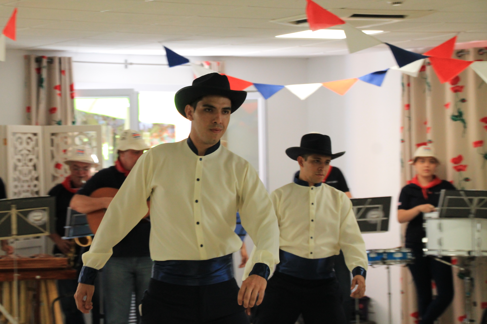

Acerca de mi...
Yo soy Andrey Antonio Rojas Gómez.
Vivo en la frontera con Panamá, en Paso Canoas.
Soy hijo de Eximey Gómez Chavarría y Walter Rojas Arias
Soy el primer y único varon hijo varón de la familia y luego están mis tres bellas hermanas, Rachel, Melany y Madelein.
Soy Alto de 1.85m tengo los ojos de color café oscuro (quisiera los verdes de mi madre :'v), tengo cabello negro, y trigueño de piel.
